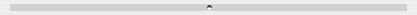
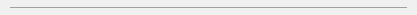

Splitter Control
Splitter control is a special user control which enables the user to change the interior dialog layout easily without increasing or decreasing the whole dialog size. With this control the user can dynamically modify the dialog view, so the required information can be quickly available.
-
 
Item type
- DG_ITM_SPLITTER
Subtypes
-
Subtype Meaning DG_SPLT_HORIZONTAL The splitter is diplayed horizontally and might be dragged vertically. DG_SPLT_VERTICAL The splitter is diplayed vertically and might be dragged horizontally. DG_SPLT_TRANSPARENT The splitter is transparent and it might be seen only from the cursor feedback that there is a dragable splitter.
GRC Specification
Splitter x y dx dy [Transparent]
where x and y are the pixel coordinates of the upper left corner of the splitter, dx and dy are the item width and height in pixels. Set the optional Transparent flag to draw a transparent splitter. If the optional Transparent flag is omitted, a normal splitter control is drawn. The horizontal and the vertical subtype depend on the item width and the item height of the control.
Messages
-
Message Meaning DG_MSG_SPLITTERDRAG The splitter control is being dragged. The message data parameter is a pointer to a DGSplitterMsgData structure cast to DGMessageData. This structure contains information about the user action. DG_MSG_CLICK The splitter control is clicked. The message data parameter is a pointer to a DGSplitterMsgData structure cast to DGMessageData. This structure contains information about the user action. DG_MSG_DOUBLECLICK The splitter control is double clicked. The message data parameter is a pointer to a DGSplitterMsgData structure cast to DGMessageData. This structure contains information about the user action.
Transparent Flag
The splitter control can be transparent or normal. The color of the transparent splitter control is the background color of the dialog, in this case the user cannot notice the control only by the change of the cursor above the splitter. The color of the normal splitter control is the color of the rolldown control, ie. it is theme-dependent.
Remarks
The splitter control might be oriented horizontally or vertically. The horizontal splitter might be dragged vertically, the vertical splitter might be dragged horizontally. Cursor feedback above the splitter control shows the possible interaction. During the dragging of the splitter there is a realtime dialog update.
On both platforms the splitter control is a thin area without any frame, its thickness is defined in the resource - the suggested minimum thickness is 7 pixels. On Macintosh there is a small 5x5 pixel-size round button in the middle of the splitter control. The splitter cannot change the dialog size. The valid positions of the splitter control are given by the application. The control cannot be dragged out of the dialog area.
The drag status of the splitter control can be set by the DGSplitterEnableDrag, DGSplitterDisableDrag and DGSplitterSetDragStatus functions. The drag status can be retrieved by the DGSplitterIsDragEnabled function.
Requirements
- Version: DG 2.2.0 or later
- Header: DG.h
See Also
Dialog item types
Splitter control specific functions, DGSplitterEnableDrag, DGSplitterDisableDrag, DGSplitterSetDragStatus, DGSplitterIsDragEnabled, Callback functions
DG_MSG_SPLITTERDRAG, DG_MSG_CLICK, DG_MSG_DOUBLECLICK